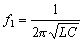

電震動頻率
編寫日期: 2007年8月26日
程式編號: FMLA 13

單位: f: Hz, L: H, C: F
例題: 若電路的自感 L為 50 mH (50×10-3H)及電容 C為 80μF (80×10-12F)，求諧波振盪頻率。
按 FMLA 13 再按 50 EXP - 3 EXE 80 EXP - 12 EXE (顯示諧波振盪頻率f1為79577.47Hz)
註1: 按 FMLA 後若果忘記程式編號，可以按 ↑或 ↓ 找尋內置公式的英文名稱，找到公式後再按 EXE 選取公式即可。
註2: 在輸入公式變數時，可以按 SHIFT LOOK 查看公式，再按 SHIFT LOOK 返回輸入變數。
返回 CASIO fx-3650P II及fx-50FH II程式集